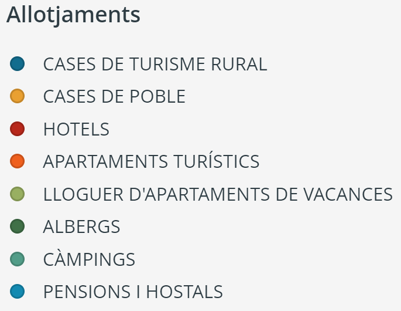
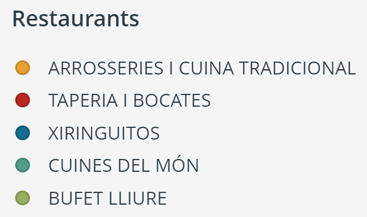
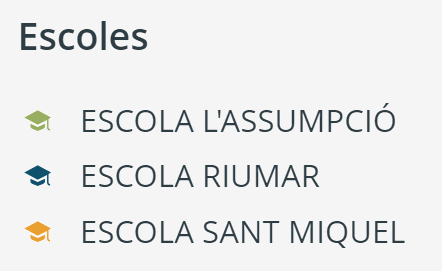

Baix Ebre - Tarragona
Població
50,47% homes - 49,53% dones
Atur
mitjana 2017
Nacionalitat Estrangera
2017
Turisme anual
Ecomuseu i Riumar
Restaurants
2017
Allotjaments
5.242 places
Sobre Deltebre
Deltebre és un municipi situat al bell mig del Delta de l'Ebre, a la comarca del Baix Ebre. Actualment té una població de 12.023 habitants (dades de principis de 2018) amb gairebé paritat entre el percentatge de dones (49,53%) i el d'homes (50,47%).
L'economia del municipi es basa en tres principals sectors. Per una banda, la construcció, tot i que ha patit una baixada considerable després de la crisi. Per altra banda, l'agricultura i la pesca, especialment el conreu d'arròs, conegut arreu com un dels principals productes del Delta. Finalment, el més important: el sector turístic i de serveis. L'activitat cultural, l'entorn natural i la situació prvilegiada del municipi són de gran atractiu pel turisme tant local com internacional.
Territori
Deltebre està envoltat d'un territori ric i molt divers.
Hi podem trobar tant grans extensions de conreus d'arròs com paratges naturals o quilòmetres de platges.
És per això que el municipi atreu una àmplia varietat de visitants i acull activitats de tot tipus.
El Delta de l'Ebre canvia de color constantment. Al llarg de l'any el podem trobar de 4 colors diferents:
BLAU
Un cop s'ha llençat l'adob (guano) per, posteriorment, poder sembrar l'arròs, els camps s'inunden d'aigua (març i abril) i el Delta s'inunda de color blau.
VERD
Durant els mesos de maig i juny l'arròs creix i el Delta es torna de color verd.
GROC
L'arròs creix i madura al llarg dels mesos de juliol, agost i setembre, cobrint-ho tot de color groc.
MARRÓ
Durant l'època de la sega (setembre i octubre) tornem a canviar de color, són els mesos on trobarem el Delta marró.
BLAU
El blau torna per acomiadar l'any (novembre i desembre), però aquesta vegada l'objectiu d'inundar els camps és el de conservar la flora i la fauna del territori.
El cicle de l'arròs no s'atura, i tampoc ho fa Deltebre. Trobem jornades relacionades amb el món gastronòmic i de tot tipus al llarg de l'any.
Durant 2018:
Del 8 al 25 de març
Jornades de la tellerina
Del 18 al 20 de maig
Mescla: Mostra de Gastronomia i Turisme
Del 6 al 22 de juliol
Jornades del musclo
Del 31 d'agost al 16 de setembre
Volta i tapa’t
Del 9 al 25 de novembre
Jornades de l’ànec
Deltebre té un total de 4 platges amb extensions i serveis diferents:
La platja Riumar és semiurbana, amb bandera blava que disposa de diferents serveis: socorrisme, lloguer d’hamaques i para-sols, patins aquàtics, guinguetes... i té una zona habilitada per a la pràctica d’esports aquàtics.
La platja Bassa de l’Arena té zona habilitada per a mascotes, zona per a pesca i platja nudista.
La platja de la Marquesa té zones per a banyistes, per a gossos i per a pesca.
La platja Punta del Fangar és una zona de gran riquesa natural amb l’accés a peu.
Durant tot l'any Deltebre rep visites d'ornitòlegs i apassionats del món dels ocells que venen al Delta de l'Ebre. Any rere any, ornitòlegs de tot el món passen per les terres del Delta i fan parada al municipi de Deltebre.
El següent gràfic mostra les famílies i espècies que podem trobar més habitualment al Delta amb el nom comú en català, castellà i anglès, el nom
científic i l'estatus, segons la classificació esmentada anteriorment.
Estatus:
Població
Deltebre és un municipi jove dins la comarca del Baix Ebre.
Però, com són les persones que hi viuen?
A grans trets es pot dir que Deltebre té una població molt equiparada entre sexes
i acull una àmplia varietat de nacionalitats diferents entre els seus habitants.
12.023 habitants
El percentatge d’homes a Deltebre (50,47%) és lleugerament superior al de dones (49,53%) en els últims anys. D’altra banda, observant l'evolució s’aprecia l’envelliment progressiu de la població de Deltebre, que segueix la tendència general europea dels últims anys.
El gràfic mostra la distribució de la població per edat i sexe des del 2013 al 201712.5% de la població
Actualment, a Deltebre hi ha persones de 57 nacionalitats diferents, proporcionant una enorme diversitat cultural.
El percentatge de ciutadans amb una nacionalitat diferent de l’espanyola és del 12.5%.
D’entre aquests, més d’un terç són romanesos. Els següents països amb més representació són Marroc, Pakistan i Alemanya, respectivament.
Per altra banda, entre els països menys representats trobem Xile, Filipines, Hongria, Mèxic, Síria o Luxemburg, entre d'altres.
Serveis i poble
Deltebre té un ventall molt ampli de serveis. Alguns d'ells estan enfocats a la propia ciutadania del municipi, d'altres al turisme i, en molts casos, a tots dos col·lectius. La varietat d'allotjaments i restaurants fan de Deltebre un lloc flexible i ideal per gaudir d'experiències diferents.
99 associacions
A Deltebre hi ha una centena d’associacions diferents de tot tipus. Només entre les esportives i les culturals ja representen més de la meitat de les associacions totals. També trobem diverses associacions socials, cíviques i professionals. Per últim, també hi ha col·lectius de joves, dones i gent gran.
Ecomuseu
Les visites a l’Ecomuseu han sigut molt variants al llarg dels últims anys. El 2015 va ser de 16.886 persones (un 53% del total de visitants). Aquest percentatge és degut a que al 2015 hi havia dues casetes (La Cava i Jesús i Maria). L’any 2016 van tancar les dues casetes i es va obrir la de Riumar. És per això que durant 2016 les visites a l’Ecomuseu van augmentar fins a 31.472 (un 93%) i la caseta de Riumar només va rebre un 7% de les visites totals. El 2017 veiem que les visites a l’Ecomuseu segueixen augmentant fins a 32.745 persones, mostrant així que el turisme a Deltebre té una tendència a l’alça en els últims anys.
Comparació de l'evolució mensual de visites a l'Ecomuseu durant els anys 2016 i 201788,8% allotjaments
Dins dels serveis turístics que ofereix Deltebre diferenciem 3 tipus:
Restaurants (7,06%), Allotjaments (88,76%) i Activitats complementàries (4,18%).
Aquestes dades confirmen que els principals serveis turístics oferts per Deltebre es centren en allotjaments tot i que el nombre de restaurants també és elevat.
Les activitats complementàries, tot i ser un percentatge molt més petit, són fonamentals per l'experiència que els turistes s'emporten després de passar pel municipi.
5.242 persones
Tot i que hi ha una gran varietat de tipus d’allotjaments disponibles, els Habitatges d’Ús Turístic del poble i, especialment, de Riumar, són els més nombrosos i els que més capacitat ofereixen (junt amb el càmping). A una menor escala, també hi ha moltes cases als arrossars i altres zones rurals. Hotels i pensions completen l’oferta d’allotjaments a Deltebre.
Tot i que hi ha molts allotjaments orientats al turisme rural a Deltebre, també hi ha hotels i hostals, cases de poble, apartaments, albergs i càmpings, completant una oferta d’allotjaments variada i adaptable als diferents tipus de turisme que hi ha a la zona.
 Situació dels allotjaments a Deltebre, classificats pel tipus d’allotjament i per si admeten o no mascotes.Un dels serveis turístics més importants de Deltebre són els restaurants. N'hi ha de diferents i molts d'ells tenen opcions i menús per celíacs. Dins de les principals categories trobem restaurants especialitzats en Arrossos i cuina tradicional, d'altres en Cuines del món i també de Tapes i entrepans. Per altra banda, hi ha una zona a Riumar amb diferents xiringuitos de platja que obren durant l'estiu.
 Situació dels restaurants a Deltebre, classificats pel tipus de menjar i per si tenen o no menús per a celíacs.Curs 2018-2019
La Zona 1, corresponent a l’Escola Riumar, anirà des de la zona Cooperativa de Vivendes fins als carrers St. Miquel – Estació – Trinquet. L’escola té assignada una línia i durant el curs escolar 2018-19 serà de 18 alumnes. La Zona 2, corresponent a l’Escola Sant Miquel, anirà des dels carrers St. Miquel – Estació – Trinquet fins al carrer Girona. L’escola té assignades dues línies i durant el curs escolar 2018-19 seran de 20 i 21 alumnes. La Zona 3, corresponent a l’Escola l’Assumpció, anirà des del carrer Girona fins al carrer Amposta. L’escola té assignada una línia i durant el curs escolar 2018-19 serà de 25 alumnes.
 Zonficiació Escolar de Deltebre per al curs 2018-2019Economia
Els ciutadans poden consultar a continuació les dades d'ingressos i despeses del municipi durant el darrer any, que es troben desglossades per capítols. Es mostren les dades pressupostades i les reals. També es mostra el percentatge de dones i d'homes aturats durant els darrers anys.
Any 2017
Les despeses han sigut inferiors a la previsió en pràcticament la totalitat de capítols. El major percentatge de diners s'ha destinat a les despeses de personal. Les inversions reals han sigut menors que les pressupostades, mentre que les despeses corrents en béns i serveis han estat lleugerament superiors a les pressupostades.
Any 2017
Els ingressos durant l'any 2017 han sigut inferiors a les previsions. S’ha ingressat més del previst en impostos directes, transferències corrents i ingressos patrimonials, mentre que a la resta de capítols s’ha ingressat menys del previst.
6,6% d'atur al 2017
Des de l’any 2013, la tendència general del percentatge d’atur és descendent, tant per a homes com per a dones. S’observa, però, que l’atur femení és més estable al llarg dels anys, mentre que el masculí és el que ha experimentat una variació més gran (era notablement superior al femení l’any 2013, i va baixar fins a ser notablement inferior al femení l’any 2017). Durant aquests anys, l'atur femení ha baixat un 1.6%, mentre que el masculí ho ha fet un 5.3%.
Administració
A continuació es mostren dades administratives de Deltebre, com ara l'adjudicació de contractes oberts i menors durant el darrer any, així com els resultats de les eleccions autonòmiques i generals dels últims anys.
Durant l’any 2017, el contracte més important té un valor de 2.385.586.23€ i correspon a l’adjudicació del contracte administratiu d’obres referent al “Projecte Fase III de les obres d’urbanització de Riumar Zona V”, que queda a càrrec de l’empresa “ACSA Obras e Infraestructuras S.A.”. També s’han adjudicat contractes més petits (amb valors al voltant dels 150.000€) per al manteniment d’instal·lacions esportives i de zones verdes, rotondes, voreres i altres espais verds i/o públics, així com per a l’asfaltat d’algunes vies públiques. Finalment, hi ha un contracte petit d’uns 5.000€ referent a serveis d’instal·lació i logística per a les festes de 2017.
848.385€ l'any 2017
Durant l’any 2017 es van adjudicar 105 contractes menors per un valor total de 848.384,58€, dels quals 50 es van adjudicar al segon trimestre de l’any, per un valor total de 478.711,06€. La despesa en contractes menors als altres 3 trimestres ha suposat al voltant dels 120.000€ per trimestre.
Resultats
Tot i la lleugera disminució del cens entre les eleccions de 2015 i les de 2017 (8.774 i 8.721 censats, respectivament), hi va haver un augment notable de la participació a les darreres eleccions (6.573 votants, front als 6.025 a les eleccions de 2015).
Resultats
A més de la lleugera disminució del cens entre les eleccions de 2015 i les de 2016 (8.765 i 8.737 censats, respectivament), hi va haver una disminució notable de la participació a les darreres eleccions (4.703 votants, front als 5.316 a les eleccions de 2015).